25+ years in product, UI/UX design, and usability testing, applied to twelve working websites and two slide decks. Each started as a product brief I wrote. I set the audience, the look and feel, and exactly how every piece should move, then built it with Fable and Astra and kept reviewing and redirecting until it met the brief. The goal was to see how each new frontier model approaches the same product brief. Every site runs as plain HTML, CSS, and JavaScript, with no framework and no build step. Every page is designed and tested to WCAG 2.2 AA and Section 508: zero violations in an automated axe-core audit in light mode, dark mode, and at phone width, plus keyboard-only navigation checks.
01 · BriefAudience, mood, palette, and the must-have behaviors, written down before any code.
02 · BuildDirected Fable and Astra through the build, one concept at a time.
03 · ReviewTested in the browser, including accessibility against WCAG 2.2 AA and Section 508, named what missed the brief, and iterated until it held.
A high-end shop for a four-artisan brass workshop, with an archaic, otherworldly feel. The logo plaque doubles as the page's only light source, so every highlight and shadow on the site falls the same way.
3D tumbling brass ring in the hero, cycling the season's four pieces in lilac halos
Glass display-case carousel: hover dissolves the glass and the piece glows brighter
Drag-to-rotate 360° viewer on every piece page, with the artisan's first-person notes
Hour-by-hour booking grid for an appointment at the maker's bench
A French bakery with three neighborhood shops, built around one job: get a pastry order placed for a pickup time that the chosen shop can actually meet.
Pick a bakery, then a pickup date and time drawn from that shop's own hours, with a 48-hour lead time
Searchable menu with Viennoiserie, Pâtisserie, Cakes & tarts, and Savory filters
Shopping bag with an order review step before anything is confirmed
Same brief, other model · annotated prototype · Fable
The same product-page brief as the card above, run through Fable instead of Astra. Where Astra delivered a polished shop page, Fable delivered a working spec: the whole shopping path, annotated for the team that would build it.
The full path: product page, category, related items, watchlist, checkout, and order confirmation
A labeled URL map in the address bar showing where each page sits in the site
On-page [CONTENT] and [TODO-DEV] notes marking placeholders and what a developer builds next
A "Demo the DIY path" walkthrough, plus sample reviews labeled as written for this concept
An independent bookstore's "Shelf Talkers" page, where three booksellers (Wren, Theo, and June) each keep a shelf of the books they press into customers' hands.
Browse by bookseller or by genre: gothic and horror, fantasy, literary fiction, graphic novels
A book carousel with a short note from the bookseller on every card
Book detail dialog and a reserve-for-pickup request flow
Nine cover designs made for this site, in place of publisher art
A "fiesta-luxe" landing page for a counter-service taqueria: fast tacos, slow margaritas. Built as a concept, so prices, reviews, and contact details are samples.
Open or closed status worked out live from the posted hours
Swaying papel picado banner and a scrolling specials ticker
Taco picker that swaps the description and price; heat ratings for five house salsas
Reviews carousel, ordering, directions, catering, and events, plus an optional music toggle
A second take on the designer portfolio, this time for a designer who works out of a bookstore. Mobile-first, in an evergreen and antique-brass palette.
A "matching desk": free-text search plus multi-select chips for style, industry, organization, and format
Nine portfolio pieces, each drawn as original vector art
Contact form that files leads to a studio ledger, ready to sync to Airtable
Portfolio and Connect buttons pinned within thumb reach
Best on a desktop or laptop: this one was designed as a wide-screen layout.
Slides
One brief, two decks
A day-one safety briefing for a fictional summer camp, given to both models. Director Ned runs the room while Klutzy Karl makes every mistake so the campers can catch it.
Fable turned each topic into a game: a flat vector scene with six numbered klutzes to find, a running count, and the matching rule for every mistake. It also handed the presenter a one-page cue card.
Six numbered mistakes per scene, each paired with its safety rule
A klutz counter and a shout-it-out prompt on every topic slide
Ned's One-Page Cue Card: the whole script and quick answers on one sheet
A bedtime recap where Karl finally gets everything right
Most of these briefs went to two models, Fable and Astra, so I could see where they diverge. Left undirected, Astra leans toward the real thing: a site that looks and behaves like the business's actual website, and twice a full app with sign-in and a database. Fable leans toward the design: polished comps, canvases, and annotated prototypes that read like a handoff to a build team.
Neither answer is wrong. Knowing which way each model leans tells me how to write the brief, when to steer, and which model to hand which job. The live site in each row is the run I picked; the others are captured screens.
Jewelry storefront
A high-end shop for a handmade brass jewelry workshop. All three runs reached for a 3D brass ring in the hero; Astra built both of its versions as multi-page React storefronts.
LiveFableBrass by Bezalel, card 01
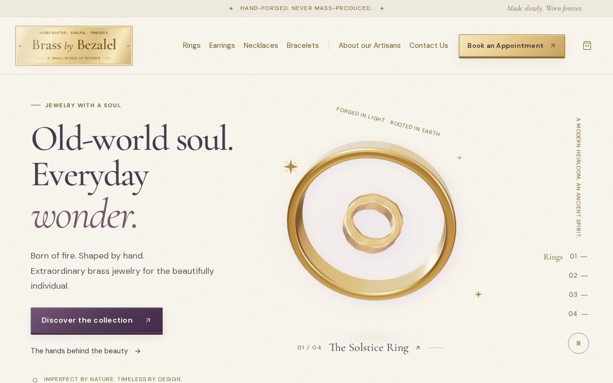
Astra"Old-world soul. Everyday wonder."
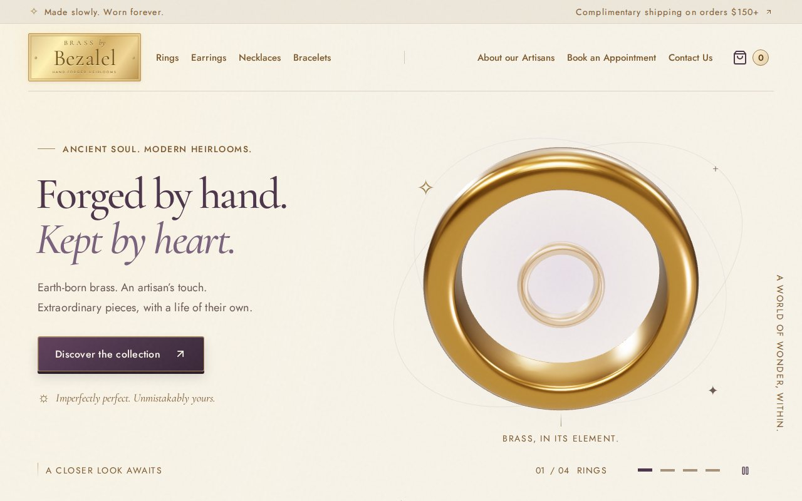
Astra"Forged by hand. Kept by heart."
Bakery ordering
A neighborhood bakery with several shops where customers schedule a pickup. Astra built the working ordering flow; Fable designed the order-ahead experience as a single-page prototype.
LiveAstraMaison Odile, card 04
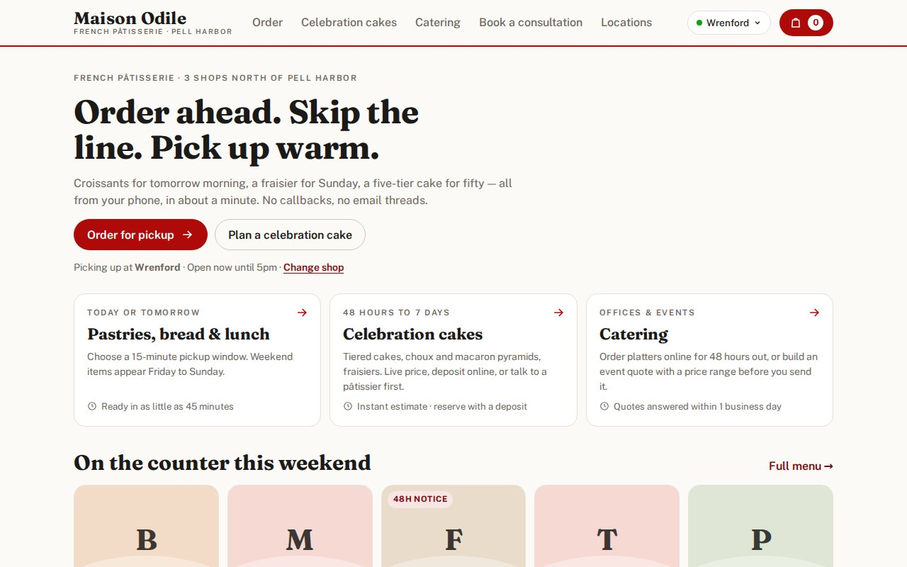
FableOrder-ahead prototype
Artisan bread bakery
A naturally leavened bread bakery with a seasonal menu. Fable handed back a design canvas; Astra built a full web app with member sign-in and a saved Bread Club request book.
LiveFableHollis Hearth, card 12
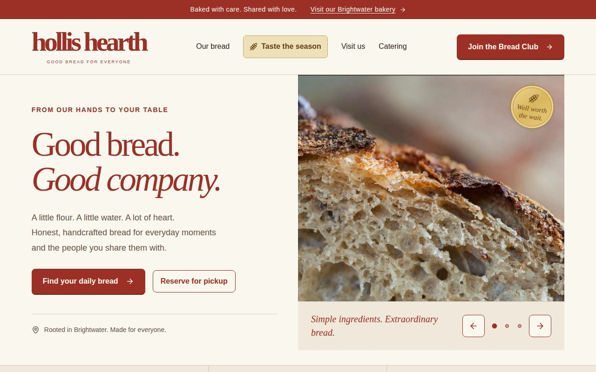
AstraFull app, run locally in demo mode
Bar and grill
A big beer hall with a patio BBQ and live music. Fable built a single landing page that estimates the crowd from the time of day; Astra built a full app where staff sign in and post live crowd readings to a database.
LiveFableIronwood Beer Hall, card 05
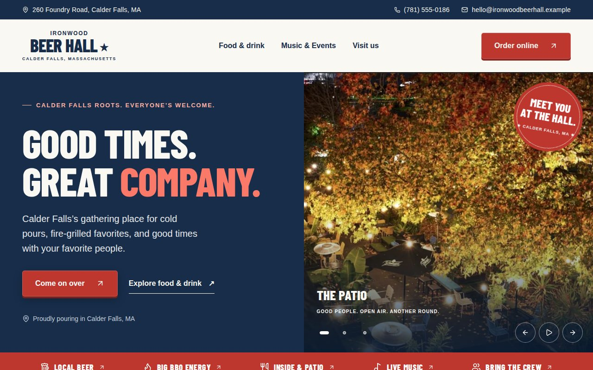
AstraFull app, run locally in demo mode
Product page
One product page for a carpenter who also sells the tools he trusts. Astra delivered a polished shop page; Fable delivered an annotated prototype of the whole shopping path.
LiveAstraArthur's, card 06
LiveFableArthur's, take two, card 07
Taqueria landing page
A landing page for a counter-service taqueria. Fable's canvas run came back as a design comp; Astra's came back as a coded site with generated food photography and a full share flow. The live page grew out of a steered Fable chat.
LiveFableTaqueria La Mexicana, card 09
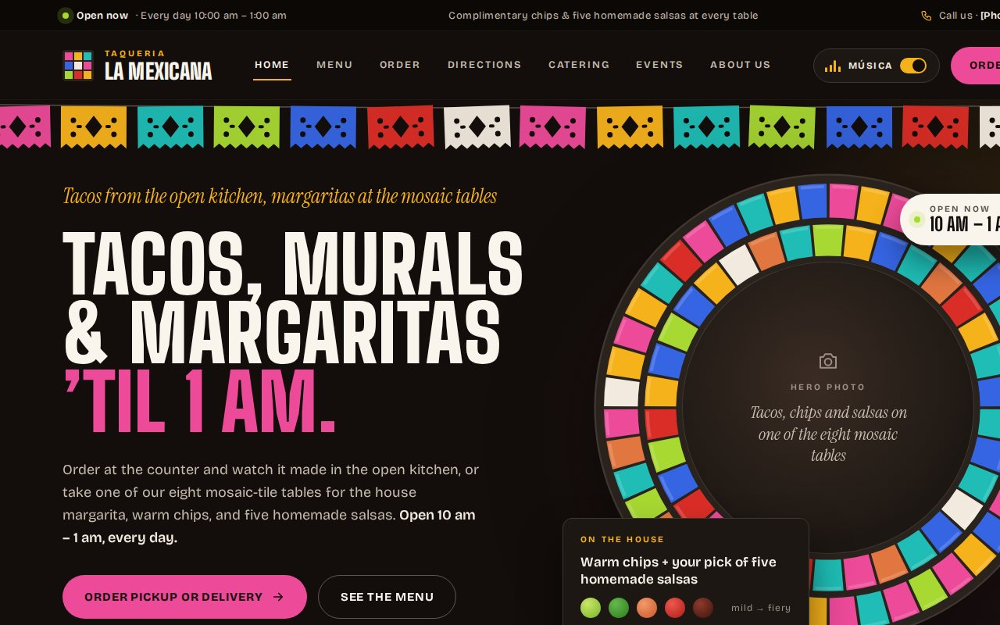
FableDesign canvas
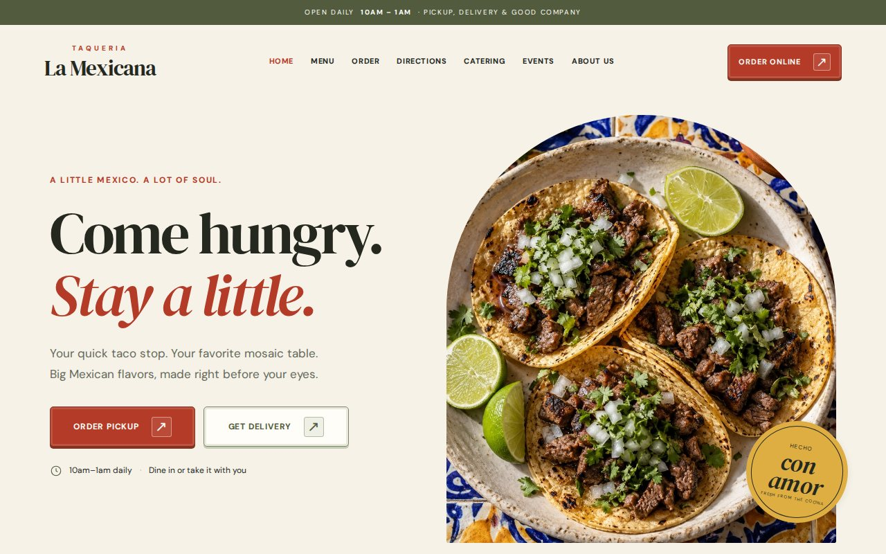
AstraCoded site with generated photos
Camp safety slides
A seven-slide safety orientation where a klutzy counselor makes every mistake. Astra painted a storybook with comic bubbles; Fable built a find-the-mistakes game with numbered callouts, a klutz counter, and a one-page cue card for the presenter.
LiveAstraKamp Kumquat, card 13
LiveFableKamp Kumquat, card 14
Bookstore staff picks
A bookstore page built around its booksellers' recommendations. Astra's runs opened on a photographic library; Fable's opened on a moody painted landscape. Covers in these images are designed stand-ins, not publisher art.
LiveAstraLanternfield Books, card 08
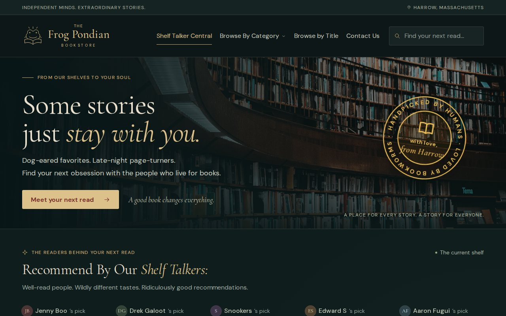
AstraFrog Pondian Bookstore, run 1
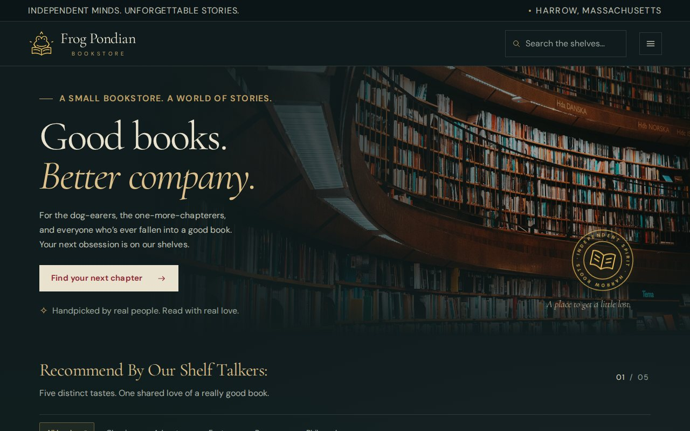
AstraFrog Pondian Bookstore, run 2
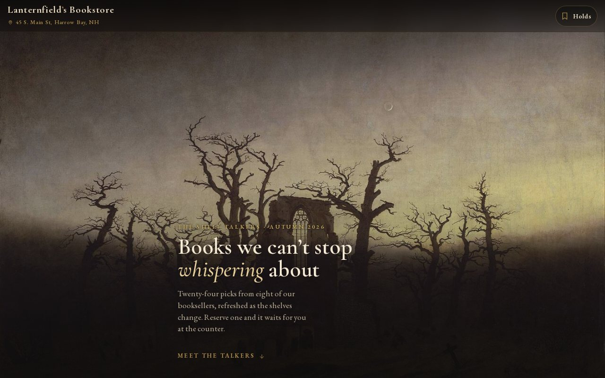
FableShelf Talkers
Designer portfolio
A portfolio for a graphic designer, built around the question every client asks: have you done work like mine? Astra went light and editorial; Fable's extra run went dark and mobile-first.
LiveFableDecco Design Co., card 10
LiveFableFrog Pondian Design Co., card 11
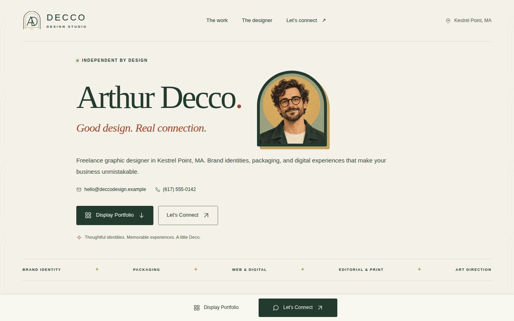
AstraDecco, light editorial
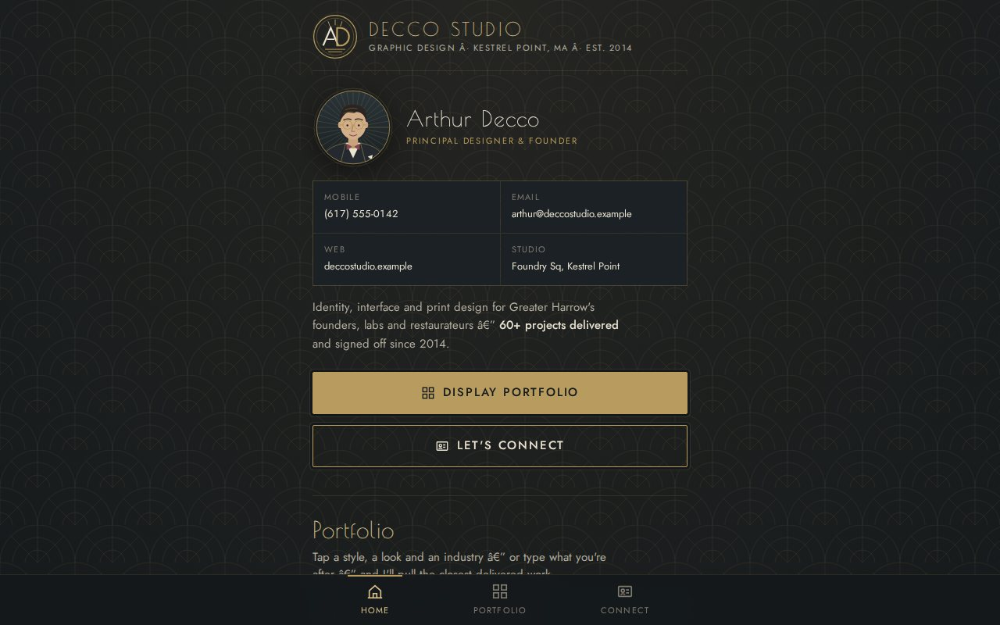
FableDecco Studio, mobile-first
Arcade
A browser arcade with three original games: a racer, a dungeon, and a space shooter. Every run landed on three cabinets; the divergence is in the look, from neon 1984 to bright pixel art.
LiveFableEdward's Arcade, card 02
LiveFablePixel Play, card 03
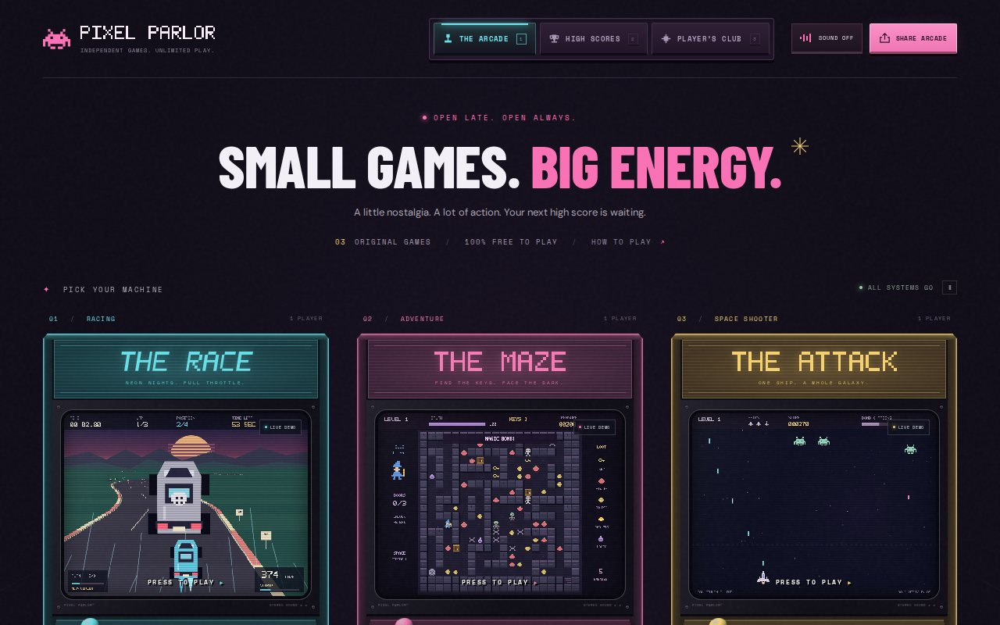
AstraPixel Parlor
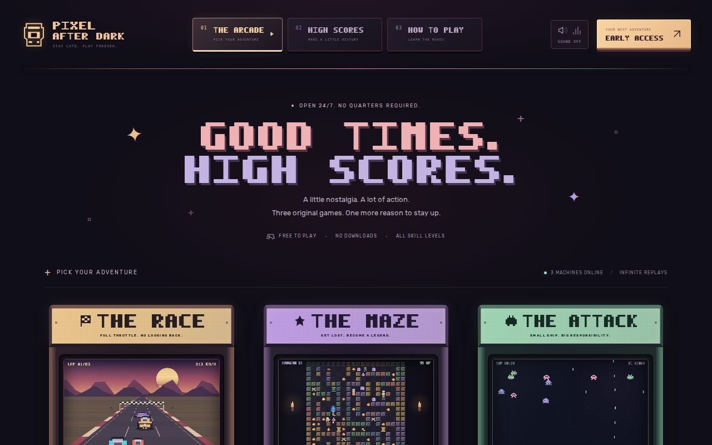
AstraPixel After Dark
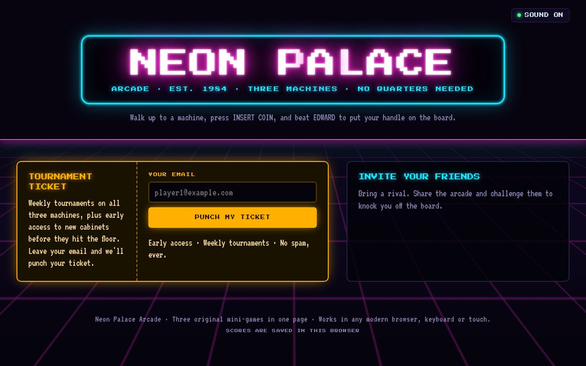
FableNeon Palace (its share pop-up opened on load; hidden for this image)
Runs built for real businesses carry the same fictional names, places, and photos as their live counterparts, and generated or stock imagery stands in for anything the original pulled from a business. Two Astra runs are full web apps; their images come from running them locally in demo mode.